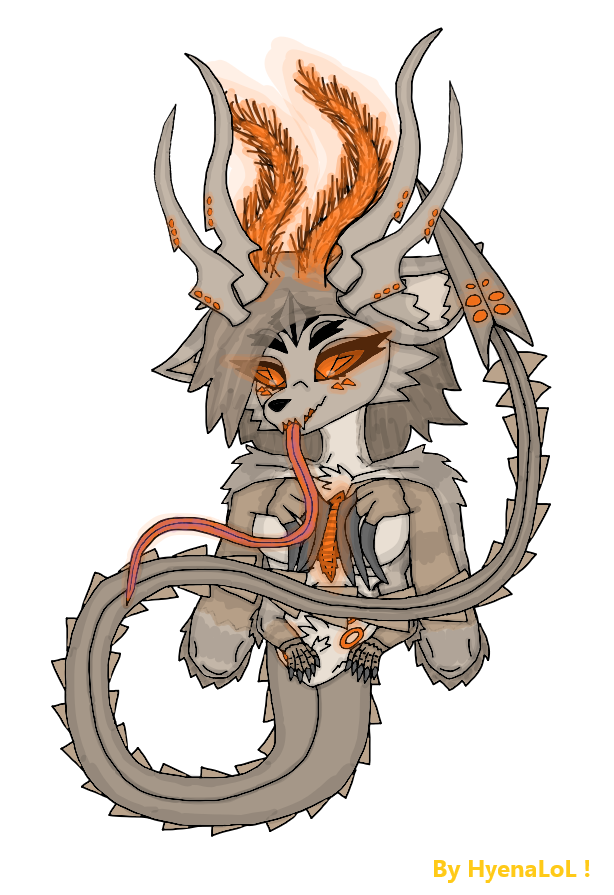

.png)
SheFurrs Castes & Stages -
Content -
- Main of Castes & Stages.
- Stage - Egg.
- Stage - Larvae.
- Stage - Cocoonization (Pupae).
- Caste - Nymph (Worker).
- Nanitic.
- Caste - Nurse.
- Caste - Scout.
- Caste - Warrior.
- Stage & Caste - Elites.
- Caste - Psyonic.
- Gamergate & Gamergated queen.
- Caste & Stage of queen - Princess.
- Caste & Stage of queen - Queen.
Main of Castes & Stages -
Overview :
The SheFurrs caste system is not typical. It is not just hive-mind - it is hive-mind + individuality at the same time. Every SheFur is: connected, synchronized, resonant with the hive, but still a separate independent personality. IMPORTANT - the caste system is not determined at the egg stage and is not pre-assigned. The caste differentiation begins only during the nymph(Worker) phase, when the individual reaches functional maturity as a nymph(Worker). Body deformations tied to caste after the nymph(Worker) stage mostly occurs in the individual's private living quarters. At this stage the hive itself selects which caste the nymph(Worker) will develop into. After the selection, the organism undergoes a metamorphosis - but unlike insects that form cocoons, this transformation happens externally in real time without cocooning. Also all the castes and stages are different in: sizes / weights / heights - not strenghtlly. The mechanism is similar to that of termites: the hive regulates the caste outcome during the nymph(Worker) stage, shaping the individual into its final role. The youngers prefer to feed on milk and dairy-based substances first, rather than meat.
Reproductive Note :
All castes except: queens / princesses / gamergates / false queens - are pseudo-females. They do not possess reproductive organs. They are not typical females, but functionally aligned with the female role in hive biology & lore.
Caste Determination :
Caste is determined at the egg stage as a deffault nymph(Worker) (Except princesses), then after time by the hive / colony.
Survival :
Important that the meaning of Can live is directlly - CAN live, thats not mean they live all this time.
Stage - Eggs -

Appearance :
SheFurr's eggs appear as orange-tinted initially small structures that later grows in size. They pass through five developmental stages. Eggs have a slimy, unsettling, semi-transparent membrane, and are not physically durable, requiring constant protection. Shape is 3D hexagonal form. Eggs emit orenge biolumen light, glowing softly in darkness. Inside the egg we can see: embryonic fluid, embryon, and developing organism.
Embryonic Fluid :
Inside the eggs there is a liquid called embryonic fluid. It hardens and turns into a glass-like substance similar to ice or amber - Bright Thingy - which becomes a leftover resource after the larvae hatch from the egg. But the structure of the egg keeps this liquid inside it's egg membrane, preventing it from solidifying.
Check all info about Bright Thingy in SheFur Weaponry Stuff page.
Growth :
A newly laid egg can fit into a human hand. As it develops, it grows significantly larger. Growth is driven by hive / colony - signals and proceeds automatically.
The egg stage develops into a Larvae in about ~12 days (SheWorld time).
Survival :
Eggs require: comfort, warmth, stable hive / colony conditions. They communicate through chemical and biological signals. Eggs are extremely dependent on the hive / colony environment. Outside the hive / colony - egg survives 5 hours (SheWorld time). In Earth-like water or ice structures - egg survives 8 hours (SheWorld time). Excessive star-light exposure can overheat and kill the egg. The egg's slime is a protective membrane, resistant to light fire and other environmental conditions.
Stage - Larvae -

Appearance :
Larvae hatches from fully developed eggs. Their coloration is dirty-white - like something newly formed with fresh untempered skin. They already have a head shaped similarly to an adult's. Antennae are present - but weak and barely functional at this stage. Larvae have: does not have legs, elongated body - but not worm-like, two small arms better developed, two main arms, hook-like gripping claws on the main arms, short hair immediately after hatching, long narrow body that transitions into a tail, formed tail-spine ending in a stinger, and tongue similar to anteater's. All five eyes are visible, but only the two main eyes functional.
Grow :
A larvae fits in the hands like a 2-3-year-old child. Grows into next stage of cocoonization (Pupae). The Larvae stage develops until the Cocoonization phase - in about ~20 days (SheWorld time).
Behavior & Abilities :
Communicates mostly through cute softy sounds, do not have a proper language yet, uses a tongue similar to anteater's to drink nutrient milk from hive / colony cells, have weaky teeth, are extremely fast agile and flexible, can swim easily, can squeeze through tight spaces, have a weak - but functional tail-venom. They live in the larval chambers inside their own hex cells waiting for nutrient milk from older individuals. Larvae are moderately dangerous, not because of strength, but because of: speed, agility, small size, tail stinger still dangerous even if weak. Larvae loves milk & dairy foods rather tham meats. Larvae has from this stage the splitter glands for defense.
Larvae produce larval-silk, which is: strong, elastic, sticky when fresh, highly valuable and has dirty-white & slightlly-orange colors. Only larvae possess the silk-producing organ, shaped like a buoy, colored orange-violet. The larvae releases thin threads of larval-silk slurry from it's mouth. These threads harden quickly and gain properties similar to silk, and after a longer period of hardening the silk becomes slightlly stronger and turns a weak-orange colors.
Social Development -
Larvae requires: comfort, warmth, social interaction, early hive / colony - behavior imprinting. Older individuals teach them basic socials.
Survival :
A larvae can survive outside the hive / colony and evolve to adult, but this is rare. Such individuals become: free blades, independent, hive-less SheFurrs - but only social hive-less not genetic (Can be more easily reclaimed).
Stage - Cocoonization (Pupae) -

When a larvae grows and completes it's early learning, she begins cocoonization inside her personal hive cell. The cocoon is made from orange-tinted fibers produced from the larva's own silk. The shape of the cocoon resembles ant pupae, but with SheFurr's biological aesthetics. The silk is extremely durable and inside this cocoon - the larva transforms into a nymph(Worker) eventually emerging into the hive / colony as a new adult individual.
Appearance :
Made of larval silk, orange-tinted, slightly transparent, resistant to light fire, biologically active. Before forming the cocoon, the larvae seals her cell - with a membrane door: it's transparent, orange-glowing, orange biolumen, and protective. This membrane keeps the cocoon chamber stable and safe from environment. The cocoon is more brown in color - because it contains many layers of larval silk, which give it this shade.
Growth :
The pupae stage grows and transforms into a nymph(Worker) in approximately ~1.2 months - around 30-40 days (SheWorld time).
Regeneration :
If the cocoon is damaged - larvae immediately awakens, repairs or rebuilds the cocoon - then returns to metamorphosis. This ensures survival even under stress.
Behavior :
When larvae grows - she transforms into a nymph(Worker), and emerges from her cocoon, a large amount of cocoon silky material remains in the hive - so SheFurrs can gather the remains for silky resources and crafting.
Formations :
Inside the cocoon, the individual begins developing it's base coloration shifting from white to dirty-white and later after becoming a nymph(Worker) the individual develops it's true final darky colors & pattern. The cocoon stage is where legs fully forms to larvae. True adult legs only develops during cocoonization. This is the stage where the SheFurr's body transitions from larval form to the recognizable adulty structure. It is a critical stage between larvae and nymph(Worker).
Caste - Nymph (Worker) -

Nymph(Worker) is a larvae that has completed metamorphosis and emerged from her cocoon. At this stage nymph(Worker) becomes a fully adult SheFur - but still: new, dirty-white colored, soft, and cartilages are not sharpy or hardy. Nymph(Worker) is essentially a fresh undeveloped copy of an adult SheFur, waiting to mature into her final caste.
Growth :
This stage is similar to the termite's nymph phase. After hatching - they functions as low-rank workers, over time depending on hive / colony needs, they grow into their final caste or stays finaly as workers. They first emerges from their personal cell, then continue developing inside the hive / colony environment. This is a transition stage between larvae and full caste specialization.
Color Development :
Nymph's(Worker's) coloration forms here shifting from dirty-white to SheFurr's true adult darky color palette.
Caste Imprinting :
At the nymph(Worker) stage, the hive / colony and it's elites can choose the future caste of the nymph(Worker). They do this by sending: chemical signals, resonance singals, pheromonal commands, hive-resonance patterns. These signals guides the nymph's(Worker's) development to caste the hive / colony - requires.
Different Strategies :
One hive / colony - may convert 100% of nymphs(Workers) into warriors, another hive / colony - may carefully assign each nymph(Worker) to a specific role. Hive / colony tactics vary dramatically.
Survival :
Like larvae - nymphs(Workers) can survive outside the hive / colony, survival depends on luck and environment. They also can grow into hive-less adults outside the hive / colony. Can live ~30-80 years (SheWorld time). Tail venom exists - but it's weak.
Role :
Nymphs(Workers) are the basic base of all hives / colonies - for any tasks also for any cast formations. Nymphs(Workers) perform all general hive labor except: dangerous tasks, and combats. They only fight in extreme emergencies.
Title - Nanitic -
The very first SheFur individuals that born to a newly queen automaticlly receive the title nanitic. There can be from 5 to 12 of them at one hive / colony. This is an prestigious title granted at birth simply for being among the first offspring of a newly fertilized queen. Their pheromone profile changes automatically - so that all other hive / colony - members immediately recognize her. Nanitics are: rare, unique, foundational to new hive / colony - formation. Common only in newly hives, almost absent in older hives.
Role & Status :
Nanitics are usually the queen's first nymphs(Workers). The difference is the title and the pheromonal identity. This title grants them: status nearly equal to elites, elevated authority, and priority access to queen directives. They are not physically superior, their power comes from their role and pheromonal identity.
Biological Origin :
Nanitics appear automatically in new hives / colonies. After a queen is fertilized, the first eggs she produces - are not consciously controlled by her, they are generated automatically by her reproductive system, and these eggs always develop into nanitics.
Caste - Nurse -

Nurses are one of the most important non-combat caste in the hives / colonies. They come in softy-pinkish colors within their palette and their fur is: the thickest, the softest, the warmest. They are designed for: comfort, care, nurturing, not for conflict, for feeding the youngers, and for teaching the basics for newly individuals & youngers.
Role :
Raise and educate the youngers, provide emotional and social development, maintain larval chambers, ensure warmth and safety, feed larvae, stabilize hive's / colonie's morale. They absolutelly don't participate in conflicts or combats. Their entire purpose is: care, teaching, and early development. Nurses are essential - because they shape the generations, they maintain larval / nymphal and hive's / colonie's - health from physical to psyhical, they stabilize hive's / colonie's emotional resonance, and they ensure proper development of early castes. Without nurses a hive / colony - cannot grow or function in his real power.
Behavior & Abilities :
Larger milk glands (To feed more effectively), extremely soft fur for warmth, gentle behavior patterns, low aggression and roughness, and weaky venom.
Survival :
They can live ~50-100 years (SheWorld time) - because of non-aggressive and gentle behaviors.
Caste - Scout -

Scouts are one of the prestigious and important caste in the entire hive / colony. Their role cannot be overstated, they are the: eyes, ears, and sensory extension of the hive / colony - far beyond it's borders. A standard adult SheFurrs, or almost like a warriors - but slimmer, lighter, quieter, have wings, and more streamlined. They are built for: movement, perception, and survival, not for brute forces.
Abilities :
Less pronounced cartilage sharpness compared to warriors, extremely quiety footsteps, enhanced sensory & pheromone organs, and wings similar to hawk-wasp wings. Their wings do not allow full flight, but they provide: gliding, controlled falling, and rapid directional shifts. Because of their long life and constant exposure to the outside world - scouts accumulate massive experience, making them some of the one's knowledgeable individuals in the hive / colony.
Sensory Superiority :
Long-range vision, high-precision focus, superior perception compared to all non-elite castes, enhanced environmental awareness, improved chemical and pheromone detection. They are designed to detect: threats, resources, environmental changes, foreign species, and territorial boundaries.
Survival :
Scouts are rare, but among the longest-living basic caste (Excluding elite / royal - castes). Can live ~50-130 years (SheWorld time).
Role :
All reconnaissance, mapping territory, tracking threats, locating resources, marking paths, placing pheromone markers, reporting environmental changes, and early warning of danger. They operate far from the hives / colonies and often alone. Scouts are not frontline fighters, but they can defend themselves.
Caste - Warrior -

Warriors are the standard combat caste of the hives / colonies baseline of SheFurrs. They are: cartilage sharpy, fully formed, heavily built, dangerous, and physically imposing. Coloration is usually darky.
Abilities :
Little bit more muscle mass than nymphs(Workers) or scouts, stronger body, sharper claws, teeth, and tail-spikes. Warrior's venom is: stronger, designed for combat, and fully formed.
Survival :
Can live ~60-90 years (SheWorld time).
Role :
Warriors perform all general hive / colony tasks just like nymphs(Workers) - but their tasks spectrum is: broader, their tasks are more dangerous, they are deployed in hazardous zones, and combat tasks. They handle: defense, patrols, and combats.
Combat Specialization :
Warriors are both the close-combat warriors & ranged warriors.
Caste & Stage Elite -

The Elite caste represents the highest tier of individuals within the hives / colonies. They surpass their predecessors in every measurable way: stronger, faster, more durable, more experienced, more adaptive, more multi-taskable, and more dangerous. Elites do not hatch as elites, they evolve from basic castes by high experience from: nymphs(Workers), nurses, scouts, and warriors.
Transformation :
Their transformation is triggered by: age & experience, accumulated experience, hive / colony needs. Over time - their bodies begin to: reshape, deform, and reinforce themselves into elite's form.
Appearance :
Elites grow 2 extra limbs behind their shoulders, they end in hands - but with long sharp powerful claws, three upper claws and one smaller lower claw. These limbs provide perfect rear grip, enhanced climbing, additional melee claw attacks, and they remain retracted until needed. They have huge amounts of scars on their body - that shows their experience of life. Venom stronger than warriors, designed for disabling large threats. Also they have an extra "horn-antennae".
Abilities :
Very experienced individuals in hive, they are absolute monsters of combat and movement like real arts.
Survival :
Elites can live ~100-180 years (SheWorld time), or longer.
Role :
Elites are unique - because they can perform almost any tasks in the hives / colonies. Their skill spectrums - is extremely wide, far beyond any other castes, except the queens.
Caste - Psyonic -

Psyonics are one of the rarest and most specialized caste in the hives / colonies. Hardened reinforced cartilage structures, unique psyonic anatomy not found in any other caste. They are part of the elite's appearance like - but with additional biological features that make them essential for hive / colony-wide resonance and long-distance communications.
Appearance :
Elite's body appearance like, have the elite's extra limbs. Have unique psyonic limb - third additional limb grows from the spine upper back. This limb: resembles an arm - but ends not in a hand, ends in a 3D hexagonal sphere covered in multiple micro-antennaes capable of receiving and transmitting - resonance signals. This limb is normally retracted and only deployed when needed. Each signal transmission through this additional limb occurs visually with the shimmering and brightness of orange biolumen within this 3D hexagonal form. Also they have an extra "horn-antennae" like elite's.
Survival :
Can live ~120-200 years (SheWorld time), or longer.
Role :
Psyonics perform extremely specialized tasks: hive's / colonie's Archive work, heavy Support in combats like suppression or resonance disruption of coordinations, and combat recons. Resonance network construction - psyonics are responsible for maintaining resonance networks for very far distanced resonances. When hive / colony - communication becomes too distant, too weak, too unstable - psyonics deploy their special antennae-sphere limb. They drop to all fours and use the limb to: amplify signals, stabilize hive-mind resonance, extend communication range, and reconnect distant hive / colony nodes. They are the biological communication towers of the SheFurrs.
Title - Gamergate & Gamergated Queen -
Gamergated queen appears only when a hive / colony - loses it's queen and princesses. She is essentially a temporary queen chosen to maintain hive's / colonie's stability and continue leadership until a new true queen emerges. If the queen dies, and all her direct heirs princesses also die - then and only then a gamergate can really exist like gamergated queen. Also they have an extra "horn-antennae".
Selection Process :
Gamergate can be chosen from all the castes, is chosen by the surviving hive / colony members. If she satisfies the hive's / colonie's - expectations and rules well, she may be officially elevated to become the new queen named - Gamergated Queen. The gamergated queen doesn't looks like a normal queen, gamergate is still like-she's - but slightlly gains a size.
Or be pre-chosen by Queen's choice, queen may pre-select a potential gamergate during her lifetime. But this only matters if: the queen dies, AND all princesses die. Only then can the chosen individual become a gamergated queen.
Once accepted by hive invididuals, she begins to transform into a gamergated queen - but her appearance not like queen's, its just: easy body deformation, reproductive organ restructuring, hormonal shifts, and pheromone evolution. The gamergated queen will hatch absolutelly normal princesses that will become normal queens.
Biological Differences from Queens :
Gamergate does not have a queen's egg-sac. Instead - she has more female-like reproductive organ - with she can lay eggs in a female-like manner not in the royal biological way, also this gives her full control over her reproduction system, she cannot mass-produce eggs like a true queen, she is limited - but autonomous. This makes her a controlled, stable, temporary monarch for time until the normal queen will emerge from princess, not a full royal.
Survival :
Gamergates live very long lives, often comparable to princesses.
Role if Pre-chosen :
Serve the royal caste directly, act as personal attendants and trusted agents, maintain hive order, coordinate hive / colony, manage reproduction until a queen emerges, stabilize hive morale, act as the queen's closest confidants when a queen exists. They are the most trusted individuals in the hive.
Role if Becomes Gamergated Queen :
Control the hive / colony, reproduction, coordination, and all high-royal work.
Pheromones :
Gamergates receive a unique pheromone signature marking them as personally tied to the royal caste, above all non-royal castes also elites, recognizable instantly by all hive members.
Caste & Stage of Queen - Princess -

Princesses are the super direct heirs of the queen. They are the royal daughters, genetically and socially positioned to inherit the hive / colony. They are rare cast - up from 1 to 5 princesses in hive / colony. Princesses is the only caste that is initially different both externally and in chemical signature even from birth, from the egg stage. In the: embryo, larvae, cocoon(Pupae) and nymph stages of a princesses. They have additional horn-antennae - four of them on the head - are already visible, which distinguish princesses from all other individuals of the hive from the egg stage. Also princess Larvae can produce the standard SheFurrs Larvae Silk.

Appearance :
Externally, they look very similar to warriors - but with differences: they do not possess elite's extra limbs - because they not elites - they are royals, and they have extremely powerful antennae. They are built for leadership, not combats specialization. Princesses have wings like hawk-wasps wings, but after becoming a new queen they will cut-off their wings - wings are not for flying they are more for caste status. These wings allows her to: gliding, controlled falling, and rapid directional shifts, but do not allows full flight. Also they have an extra "horn-antennae".
Survival :
Can live ~100-200 years (SheWorld time). Not like queens - because princesses are a stage of queens, so she needs firstly to become a queen for longer live limits.
Succession :
If the queen dies, any princess of she's hive / colony - can immediately take her place. She becomes the new queen automatically. If multiple princesses exist and the queen is gone and not pre-selected the future queen then can be -
Hive / colony voted -
Most commonly, the hives / colonies simply chooses: who they trust, who they prefer, who they believe will lead bestly.
Princess vs Princess Conflicts -
Conflicts is possible. Princesses may: challenge each other, fight for dominance, and attempt to claim the throne by force. This can happen even while the queen is still alive especially if one princess is the favorite daughter of her mother. Royal politics are messy.
New Hives / Colonies :
A princess can also choose to: leave her mother's hive / colony, establish her own hive / colony, become a newy queen of a newy hive / colony. This is much harder - because she must build everything from scratch-base, survive alone, gather all, and create the first broods without support.
Behavior :
Princesses spend most of their time at self-training, studying hive structures, learning leadership, absorbing knowledges at all possible spheres. They do this mostlly inside the queen's chamber, mostlly near their mother. Princesses really need to be feeded with royal jelly(Queen's milk) for formation & development, in other ways - the princess will not evolve & live normaly.
Role :
They don't fight unless is necessary, and don't perform non-royal tasks. Focusing on: leadershiping, learning, and royal duties. They are the future queens and the hives / colonies treats them accordingly.
The Queen -
The Queen is the largest and most powerful individual in the entire hive / colony. She does not require a male, like some ant species - she can fertilize herself, and she does this constantly and automatically. She is enormous, biologically complex, the genetic core of the hive / colony, the absolute ruler, the architect of the hive's / colonie's evolution and genome. Her presence defines the hive's / colonie's identity. Basically - queens are the most intelligent and intellectually advanced creatures in my SheWorld.
Appearance :
The Queen's body is radically different from any other castes. Massive Size, she is the largest individual in the hive / colony, huge elongated torso, very long tail, massive head, always opened Romb-eye, and fully working elongated reproductive organ. Queens have additional limbs on their back, positioned just above the shoulders - two arms similar to those of the elite's, with long, powerful claws, as well as a paws with soft pads. 2 antennae networks instead of normal antennae, network of branching antennae structures, resembling tangled branches or lightning arcs - extremely sensitive, capable of reading and controlling hive / colony-wide resonance, these antennaes are her primary interface with the entire hive / colony. Queens have another reproductive organ - that emerges at early stages of metamorphosis fron princess to newly queen, this organ emerges from princesse's reproductive organ. Queen's reproductive organ looks like: elongated - clitoris-like tube with a rhomboid tip at end, has a brighty orange biolumen, and is very elastic. After the queen is fertilized and begins forming the egg-sac, it's begins from this organ that the egg-sac starts to grow - similar to termites. The queen also has exposed protective ribs between her chest and hind legs, along her waist and hips.
Egg-Sac Development :
The egg-sac starts from queen's reproductive organ. Her egg-sac starts small, but eventually - grows along the entire length of her tail, similar to termite queens, and becomes a massive biological structure - capable of producing numbers of eggs.
Survival :
The queens can live unbelievable amounts of years like ~100-1200 years (SheWorld time) (Including princess stage time).
Behavior :
The Queen herself does not requires food - but the princess stage, as well as the egg-sac with it's fertilization system, do need nourishments. Therefore, the queen still eats when she is still a princess and later when she carries the egg-sac, which consumes a considerable amount of food, also she's milk glands consumes amounts of foods for creating the royal-jelly. The queen is the only individual who does not excrete. She completely destroys all bodily wastes using her symbionts organ, a necessity due to the presence of the egg sac, so that nothing interferes with it's functions. The queen also have something nearlly absolute venom / toxin - protection caused by she's symbionts organ.
Genetic Control :
The queen has full control over: the hive's / colonie's genetics & genome, caste distribution, mutation suppression, mutation encouragement, gene filtering, and gene creation (Slowy and difficult). Every hive (Not colony) is genetically unique - because each queen shapes her hive's genome.
Genetic Engineering Organ :
Inside her body - is an organ directly connected to her brain - the queen's Gene-Engineering Organ, responsible for genetic editing, and allows her to remove unwanted traits, or slowly create new ones. This organ is the biological genetic laboratory.
Role :
The Queen's responsibilities exceed all other castes combined. She handles all the hive / colony, genetic managements, caste distributions, long-term plannings, global resonance controls, reproduction, communications, coordinations, and hive strategies & tactics. Her spectrum of duties is far beyond anything or any other caste can perform.
Royal Jelly :
The royal jelly is visually like basic SheFurr's milk. Queens have two milk glands on their chest. Queens produce royal jelly, with which SheFurrs feed only the Princesses instead of the regular milk used for the hive's / colonie's individuals. Royal jelly - is very nutritious and tasty, but it is also extremely important directlu only for the princesses formation and development.